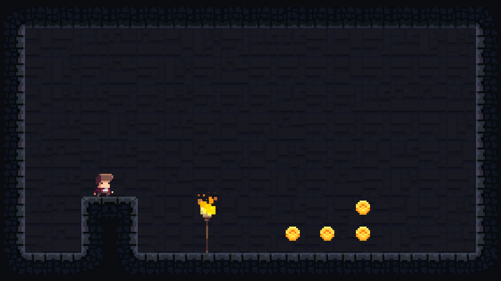

I started experimenting with game development. For now, it's a hobby, we'll see how it will go :)

After long consideration of what engine to use, I decided to start using Unity. I'm still not 100% sure, will reconsider it after some time. But for now it looks like the best available option for my needs.
I started with a very technical approach. Currently, game doesn't have a name or story - only mechanics that I still need to develop. Why is that? you ask. Well, good question. I wanted to separate concerns. Inventing the story and writing the code, when both of these things are new to me is overwhelming. I decided to concentrate on one thing and then improve the other.
If you're interested to follow the process, you should follow me on twitter @artemdemo. I regularly post new things there. I'll also update the blog, but obviously it will take more time to do.